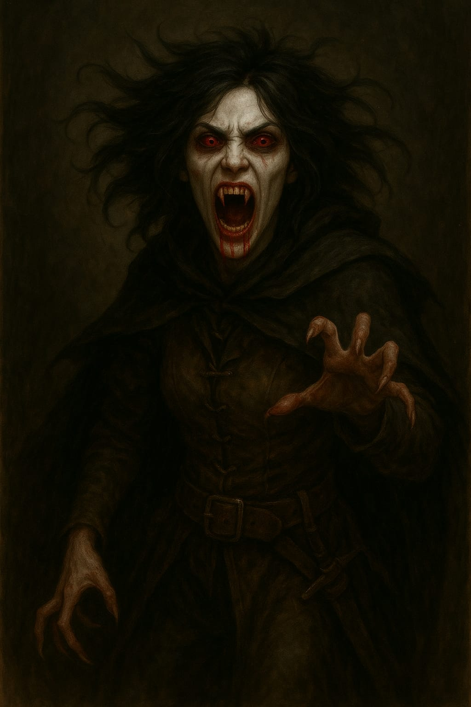

Damiana Villareal, a Vampira
Informações básicas
Nome do personagem: Damiana, a Vampira
Classe: Vampira
Raça: Humana
Status
Vida:80/80
Sangue Vital: 30/70
Inventário
Corda apodrecida
.
.
Ouro: 27
Habilidades
Beijo Profano (Habilidade Ativa)
Com os olhos brilhando em vermelho faminto, a vampira se lança sobre a presa, cravando os dentes na carne como uma fera desesperada por prazer e sangue. O mundo ao redor parece desacelerar, e o som do coração da vítima bate como um tambor de guerra.
Efeito: Recupera 8 + 1d10 de vida ao morder um alvo vivo. Não funciona em mortos-vivos, construtos ou criaturas sem sangue. Se a vítima for viva, ela também sofrerá 1d20 de dano na sua sanidade devido ao terror da mordida. A vampira recupera 1d10 de energia ao consumir sangue de um inimigo vivo, 1x por combate.
Custo da Habilidade: 10 de energia + 2d10 (rolados no momento do uso).
Névoa de Asas Negras (Habilidade Ativa)
O corpo da vampira se desfaz em uma nuvem de pelos e pele seca, enquanto um grito agudo se mistura ao bater frenético de asas. Em questão de segundos, ela desaparece, e no lugar dela, um pequeno morcego de olhos famintos plana no ar. Nas sombras, ela se move como névoa viva, quase inalcançável, observando tudo com olhos que ainda desejam carne.
Efeito: A vampira se transforma em um morcego por até 2 turnos. Enquanto transformada, não pode atacar, mas pode voar, atravessar grades/barreiras pequenas e escapar de combate físico. Volta à forma original como ação livre ou ao sofrer dano.
Custo da Habilidade: 10 de energia + 2d10 (rolados no momento do uso).
Elegância Espectral (Habilidade Passiva)
A vampira não apenas desvia, ela desliza pelo fio da lâmina como se dançasse com a morte. Seus movimentos são fluidos, quase silenciosos, e seus pés parecem jamais tocar o chão por completo. Há algo de hipnótico e assombroso na forma como ela se esquiva: um reflexo que vem de um corpo morto, guiado por uma alma que se recusa a descansar. A cada ataque evitado, é como se ela zombasse da pressa dos vivos.
Efeito: A vampira possui +1 unidade de contagem em testes de desvio, graças aos seus reflexos sobrenaturais e sua graça antinatural. Ela reage antes dos golpes serem completamente intencionados.
Recuperação de Sangue Vital: A vampira pode recuperar Sangue Vital bebendo sangue de animais, criaturas ou pessoas fora de combate.
No entanto, essa ação não é garantida e geralmente envolve riscos: a vítima pode resistir, fugir ou chamar ajuda, potencialmente iniciando um combate. O mestre pode exigir testes furtivos ou de intimidação para determinar o sucesso da ação e as consequências. (Sangue derramado de inimigos mortos não conta para essa recuperação, pois a vampira precisa do sangue fresco e pulsante para se fortalecer.)Quando bem-sucedida, a vampira recupera 1d10 + 10 pontos de Sangue Vital.